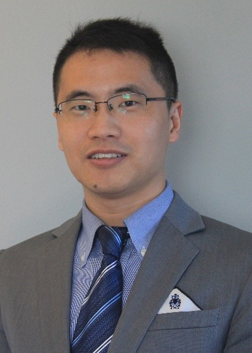

School of Public Health Nanjing Medical University, Nanjing, Jiangsu, China
研究方向：炎症与代谢性疾病的遗传流行病学
地址：南京市江宁区龙眠大道101号南京医科 大学至诚楼G441
邮箱：xianyongyin@njmu.edu.cn
Xianyong Yin, Professor.
尹先勇，医学博士，流行病学教授，博士生导师。2005年在安徽医科大学获医学学士学位并留校任教，2009年获安徽医科大学皮肤病与性病学硕士学位，2014年获安徽医科大学皮肤病与性病学博士学位。2014年至2015年任安徽医科大学皮肤病研究所副教授，2015年至2017年任美国北卡大学教堂山分校遗传学系研究助理教授，2017年至2023年在美国密歇根大学安娜堡分校生物统计学系从事博士后研究，2023年起任南京医科大学流行病学系教授。主要从事炎症与代谢性疾病的遗传流行病学研究，共发表SCI论文80余篇，其中以第一/通讯作者（含并列）在Ann Rheum Dis、Am J Hum Genet、Nat Commun等杂志发表论文26篇，他引6000余次，H指数33；主译《遗传统计学》（人民卫生出版社）。主持完成国家自然科学基金青年基金、国家自然科学基金面上项目、安徽省杰出青年基金、美国糖尿病学会（ADA）博士后研究基金等项目研究。以主要参与者身份获2016年中华医学科技奖一等奖和2021年中华医学科技奖三等奖；入围美国人类遗传学会（ASHG）2022年Charles J Epstein奖，美国密歇根大学2018年精准医学青年学者奖，理肤泉（LA ROCHE-POSAY）亚太基金会2016年优秀基础研究论文奖、美国实验皮肤科学会（SID）2015年Albert M. Kligman奖等。应邀担任Genetics in Medicine杂志编委（Editorial board member）和Phenomics杂志青年编委，曾任 British Journal of Dermatology杂志副主编（Associate editor）。
|  |